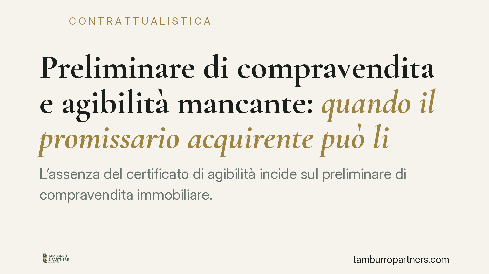

Preliminare di compravendita e agibilità mancante: quando il promissario acquirente può liberarsi
L'assenza del certificato di agibilità incide sul preliminare di compravendita immobiliare. Il promissario acquirente non è sempre obbligato a stipulare il rogito se l'immobile non è utilizzabile secondo la destinazione concordata. Capire i confini tra recesso, risoluzione ed eccezione di inadempimento è decisivo per non incorrere in errori che pesano sulla caparra.

Il fatto e perché conta
Chi firma un preliminare (il cosiddetto "compromesso") si impegna a concludere in futuro il contratto definitivo di compravendita. Ma cosa accade se, prima del rogito, emerge che l'immobile è privo del certificato di agibilità?
L'agibilità è il documento che attesta la sussistenza delle condizioni di sicurezza, igiene, salubrità e risparmio energetico degli edifici. Senza di essa l'immobile, pur esistente, può risultare inidoneo all'uso al quale è destinato: un problema tutt'altro che formale per chi acquista una casa per abitarci.
Inquadramento normativo
Il venditore ha l'obbligo di consegnare un bene idoneo all'uso pattuito. L'art. 1477 c.c. stabilisce che la cosa deve essere consegnata insieme agli accessori, alle pertinenze e ai titoli e documenti relativi alla proprietà e all'uso. La giurisprudenza della Cassazione riconduce a tale previsione anche il certificato di agibilità: l'assenza del documento integra un inadempimento del venditore, perché la sua mancanza incide sull'attitudine del bene a soddisfare l'interesse dell'acquirente.
Su questa base, il promissario acquirente dispone di due strumenti principali.
Il primo è l'eccezione di inadempimento prevista dall'art. 1460 c.c.: chi deve stipulare il definitivo può rifiutarsi di farlo (e di pagare il saldo) finché la controparte non adempie il proprio obbligo, quindi finché non regolarizza l'agibilità. È una difesa che consente di non prestare la propria obbligazione in presenza di un inadempimento altrui, purché il rifiuto non sia contrario a buona fede.
Il secondo è la risoluzione del contratto per inadempimento. Se l'assenza dell'agibilità è di gravità non scarsa, l'acquirente può chiedere lo scioglimento del vincolo. In tal caso entra in gioco l'art. 1385 c.c. sulla caparra confirmatoria: se ha versato la caparra, può recedere e trattenere il doppio se l'inadempiente è il venditore; specularmente, la caparra è persa da chi è inadempiente.
Implicazioni pratiche
Attenzione a un punto spesso trascurato: non ogni irregolarità legittima lo scioglimento del contratto. La Cassazione valuta la gravità in concreto. Se l'agibilità è ottenibile con una regolarizzazione semplice e il venditore si attiva, l'inadempimento può risultare di scarsa importanza e non giustificare la risoluzione.
Conta anche cosa prevede il preliminare. Se le parti hanno espressamente pattuito la vendita di un immobile agibile, o hanno subordinato il rogito al rilascio del certificato, la posizione dell'acquirente è più solida. Se invece il compromesso nulla dice, o addirittura la vendita è stata conclusa "nello stato di fatto e di diritto" con esplicita accettazione delle irregolarità, l'esito può cambiare.
Ulteriore variabile è la consapevolezza dell'acquirente. Chi sapeva della mancanza dell'agibilità e l'ha comunque accettata avrà margini di manovra ridotti.
La distinzione tra recesso e risoluzione non è terminologica. Il recesso ex art. 1385 c.c. opera in modo automatico sulla caparra, senza necessità di provare l'entità del danno. La risoluzione con domanda di risarcimento richiede invece la prova del pregiudizio subito. Scegliere lo strumento sbagliato può indebolire la propria posizione.
Cosa fare in concreto
- Verificate prima di firmare. Chiedete al venditore il certificato di agibilità già in fase di trattativa e, in mancanza, fate accertamenti presso il Comune sullo stato edilizio e urbanistico dell'immobile.
- Fissate una clausola nel preliminare. Prevedete espressamente che il rogito sia condizionato al rilascio o alla consegna dell'agibilità, individuando termini e conseguenze in caso di mancata regolarizzazione.
- Documentate ogni contestazione. Comunicate per iscritto al venditore la carenza rilevata, sospendendo formalmente la stipula del definitivo prima di rifiutarvi di procedere.
- Non rifiutate il rogito in modo affrettato. Valutate la gravità concreta dell'irregolarità: un diniego ingiustificato può trasformarvi da parte danneggiata a parte inadempiente.
- Fatevi assistere prima di agire sulla caparra. La scelta tra eccezione di inadempimento, recesso e risoluzione va calibrata sul caso specifico e sul testo del contratto.
Disclaimer
Contributo informativo a cura di Tamburro & Partners - Avv. Giuseppe Tamburro. Non costituisce parere legale.
Ogni contratto ha il suo equilibrio.
Se vuoi una revisione delle clausole o una redazione su misura, scrivi allo studio. Ti rispondiamo entro un giorno lavorativo.